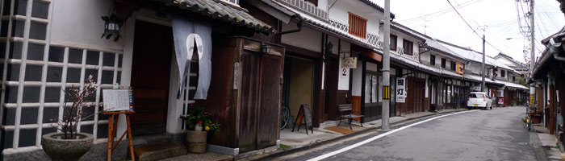
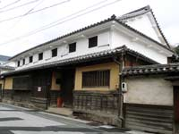
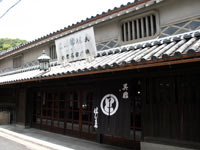
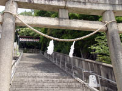
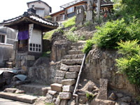
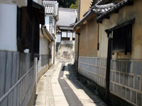
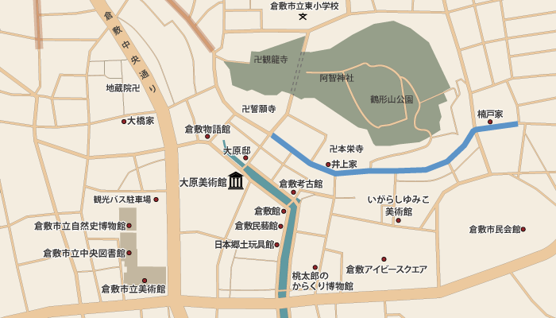

STREETS OF HONMACHI AND HIGASHIMACHI本町・東町

倉敷川から少し北側位置し、約500ｍ程ある本町・東町には、かつての港町の町家が軒を連ねています。町家のほとんどが塗屋造で、現役の住居も数多くあります。町家や土蔵を改装した飲食店、旅館、ギャラリー、雑貨屋なども多く、住居に溶け込んで並んでいます。それぞれの町家にある格子や窓などは形も様々で風情があります。
中国銀行倉敷本町出張所
1922年（大正11年）に第一合銀行倉敷支店として建てられました。ドーム型のステンドグラスが美しいルネサンス様式の設計は、大原美術館や有隣荘などに関わった薬師寺主計が担当しました。2003年（平成15年）に現在の中国銀行倉敷本町出張所に変わりました。
井上家住宅

宮崎屋という屋号を持っていた井上家は、倉敷村の村政を担った旧家です。重要伝統的建造物群の中でも代表的な町屋で江戸時代に建てられたものと推測されています。2階の倉敷窓には他では見られない防火用とされる土扉が付いています。平成14年に国指定登録文化財なりました。
楠戸家住宅

はしまやという屋号を持っていた楠戸家住宅は、明治時代に現在の形に整えられたとされています。創業明治2年の呉服屋の奥には、米蔵を改装したギャラリーや喫茶があります。平成8年に国指定文化財に登録されました。
阿智神社東参堂

本町通り中程に位置する東参堂の鳥居を抜けると88段ある米寿段、61段ある還暦段、33段ある厄除段などとユニークな名前の石段が続いています。
船着場のなごり

かつてこの一帯が船着場であったなごりの石段が残されており、その上には神様が祀られています。
ひやさい

細い路地のことで、陽が射すことがあまりなく陽が浅いという意味で「ひやさい」と呼ばれるようになったといわれています。
※写真は井上家横のひやさい

青く記している道が
観光スポットエリアです。
取材協力：楠戸家
一覧に戻る